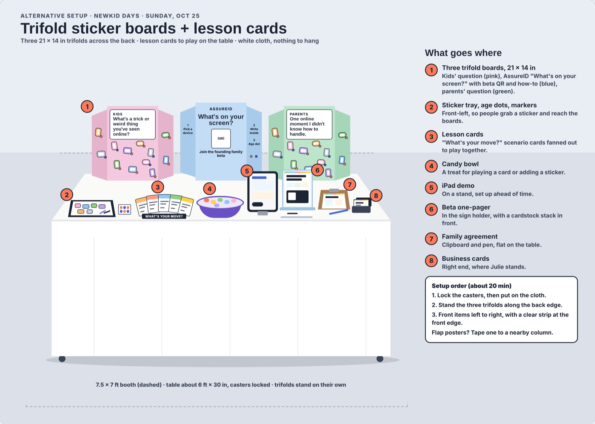
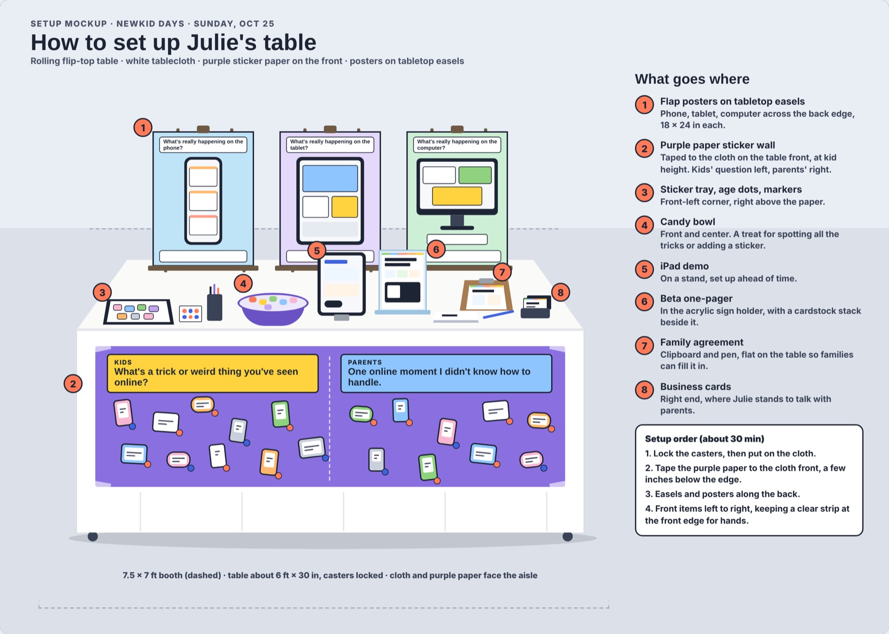
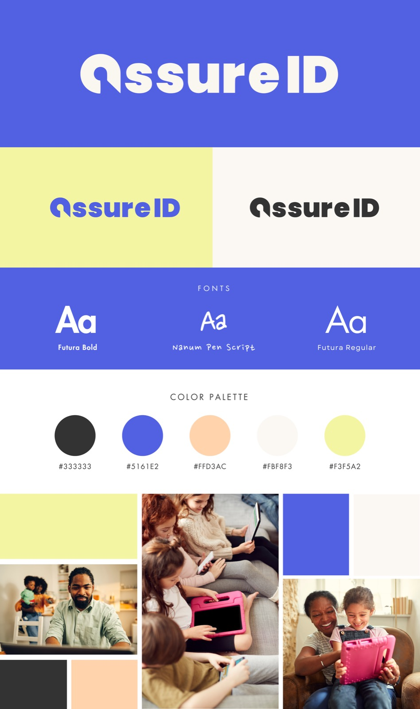
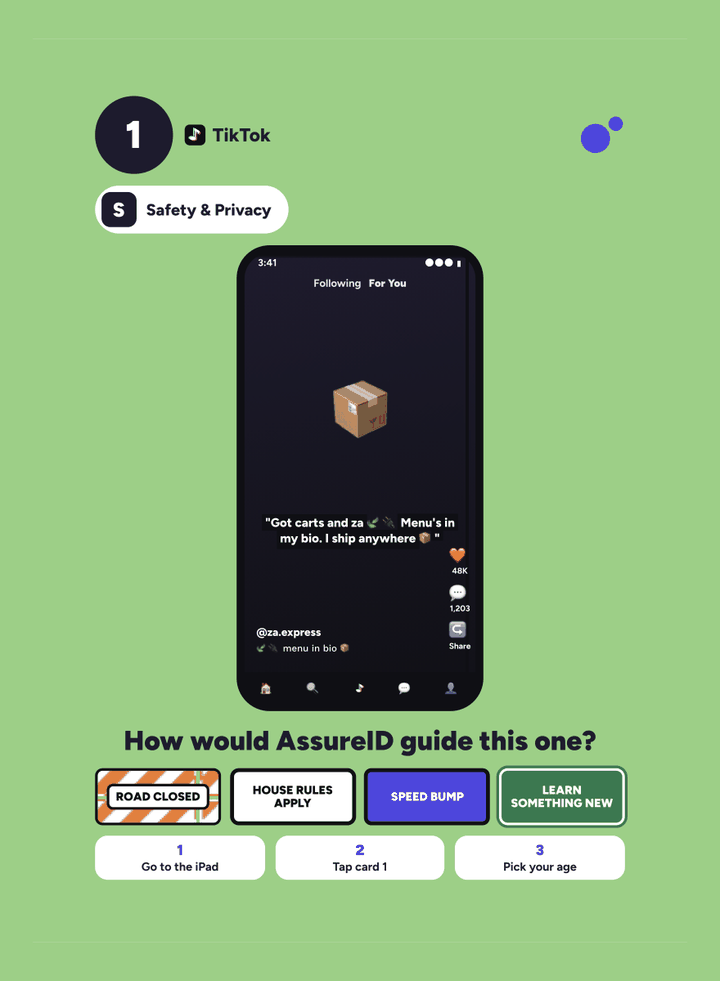
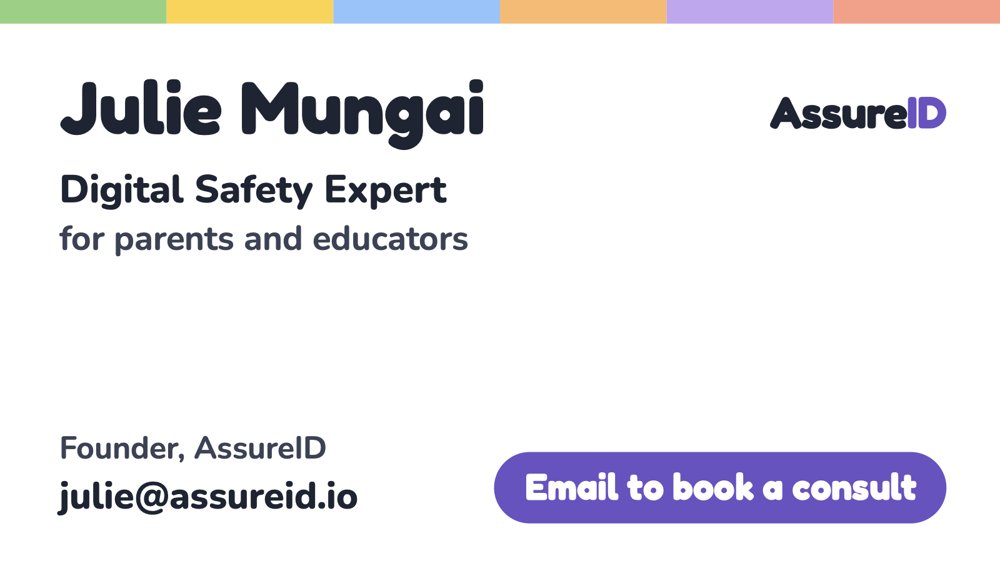
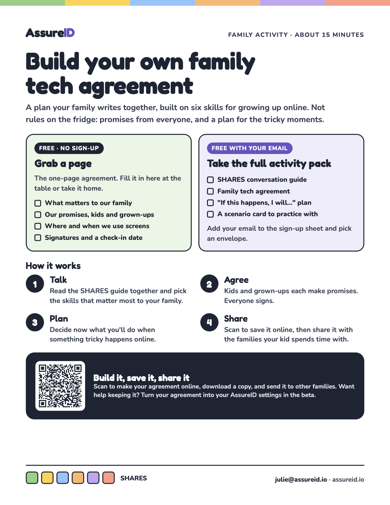
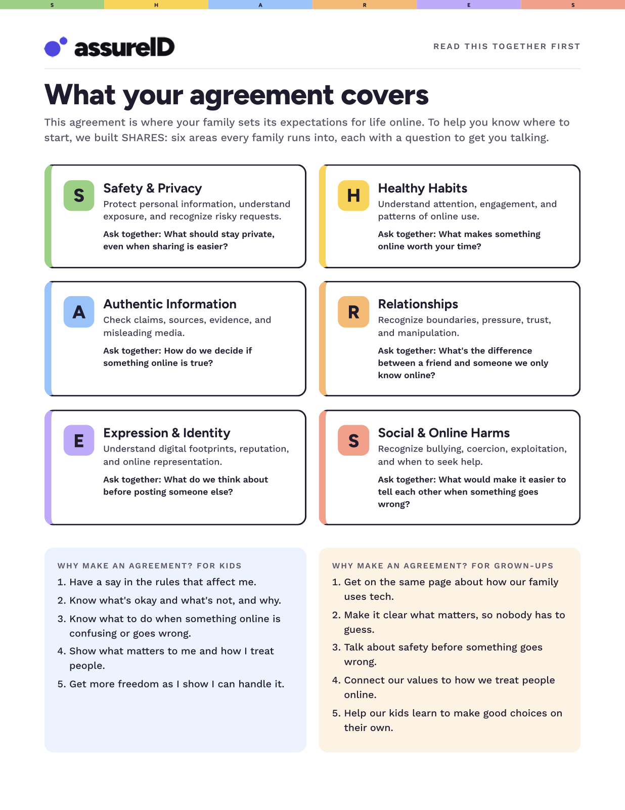
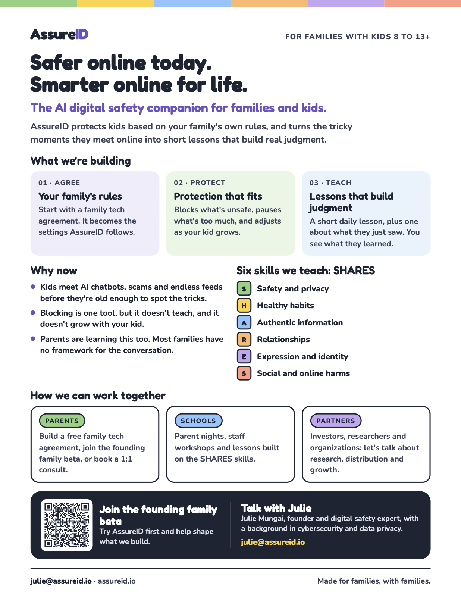
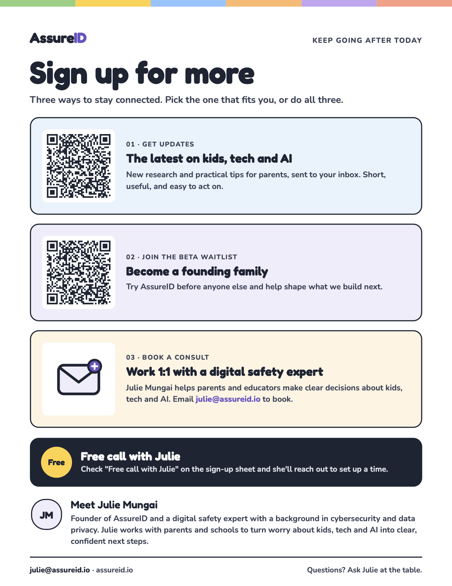

What I did
6 partsStrategy
Reframed the booth goal from pitching the product to collecting people: 25+ names and roles (parent, school, investor), with a different opening question and next step for each of four audiences, so Julie never had to improvise while staffing alone.
Brand & Creative Direction
Worked inside AssureID's existing brand kit, then extended it for print: each of the six SHARES skills got its own color, and a six-color top stripe marks every piece as AssureID from across a busy room.
Physical Product
Designed 24 scenario cards (four per SHARES skill) that pair with an iPad demo, a two-sided sticker wall for kids vs. grown-ups, a family tech agreement pack, a clipboard sign-up, a one-pager, and business cards positioning Julie as a digital-safety expert first.
Booth design
Two layouts with a numbered "what goes where" guide, scoped so one person could set up in about 20 minutes with no wall behind the table.
Funnel
Turned the family agreement into a five-step funnel that works at a booth, a talk, or online: free page → full pack for an email → digital builder → beta settings → physical expansion packs and NFC keychains.
Delivery
Every piece approved, printed, and waiting for pickup at a FedEx near the venue before Julie flew out, with supplies on two-day shipping so nothing had to survive a flight.
The work
5 images



One-pagers
4 pages · scroll →



Partners + what's next
- Client
- Julie Mungai, founder of AssureID
- Event
- NewKid Days · San Francisco · Oct 25, 2026
- Next
- Website · online agreement builder · Shopify for expansion packs · Atlanta parent events with NFC keychains · partner conversations with responsible-tech orgs